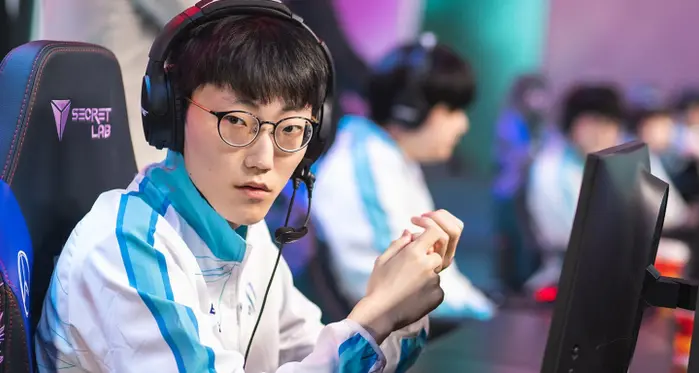
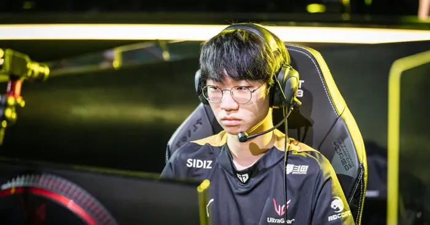
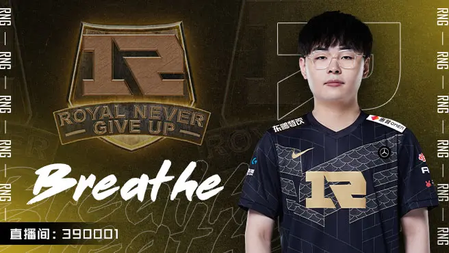
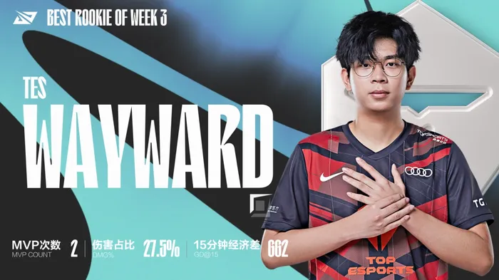
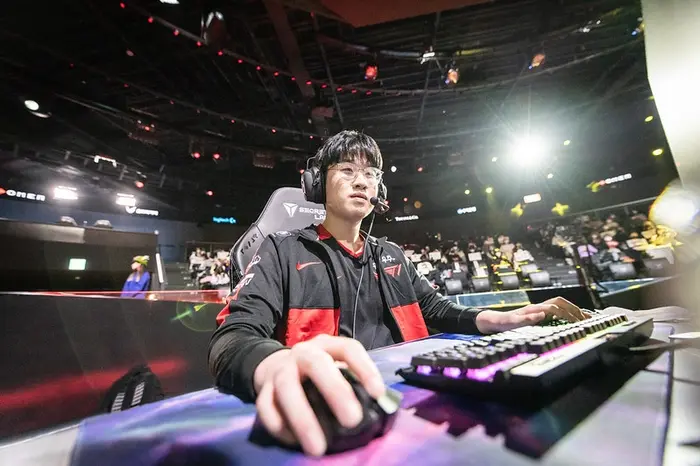
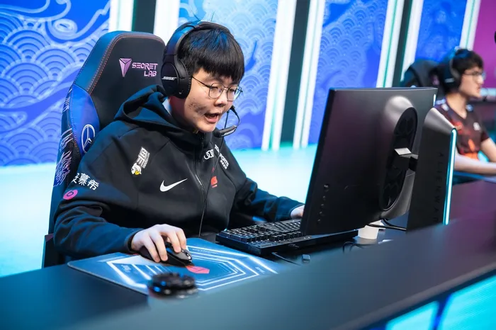

Nuguri escapa a la lista no por su desempeño reciente, sino por su pedigrí internacional. Traído recientemente para Damwon después de un descanso de 6 meses, fue un comienzo de temporada lento para él.
A pesar de su título mundial con el mismo equipo, Nuguri solo pareció encontrar su forma real en las finales regionales contra LSB, con campeones orientados al acarreo como Aatrox y Gwen.
Por lo tanto, su grupo de campeones se encuentra en un buen lugar para hacerlo bien en Worlds 2022, pero tendrá que recuperar parte de la magia de años pasados para realmente dejar una marca.

Quizás el eslabón más débil del equipo, pero no debe pasarse por alto, Doran aún ha tenido algunas actuaciones destacadas esta temporada. Jugando en gran medida un papel más débil para su equipo, ha sido consistente en el meta de Gnar, Aatrox y Ornn, y ha hecho todo lo necesario.
La única razón por la que permanece tan abajo en la lista es si puede o no desempeñarse al mismo nivel una vez que el metacambio en Worlds. Si puede esperar que compita con los mejores sin sudar.

Reconocido por su estilo de juego psicópata en el carril superior, Breathe podría ascender rápidamente en esta lista si el meta se desarrolla como esperamos. Solo se unió a RNG recientemente, en un intercambio con Bin, de BLG, se ha adaptado a su rol rápidamente.
En un meta actualmente dominado por selecciones más seguras, Breathe se ha mantenido firme, jugando con Fiora, Jax y Akali cuando le apetece. Es probable que este potencial para llevar sea un festín o una hambruna en Worlds, y solo el tiempo lo dirá.

A pesar de estar todavía en su primer año en la LPL, Wayward ha brillado. Como novato de la división en primavera, ha sido un acarreo silencioso para TES durante todo el año.
Anteriormente conocido con el apodo chino "三板斧", que significa tres golpes de hacha (o un pony truco), ha silenciado a los escépticos y ha demostrado que puede defenderse en una variedad de selecciones. Incluso llevan tops como el de Yone que han hecho acto de presencia.
Wayward será fundamental en el viaje de Top Esports en este Mundial, y dejar tal marca a nivel internacional en su primer año sería impresionante, por decir lo menos.

A pesar de no alcanzar las mismas alturas de la división de primavera, el verano de T1 no fue nada mal visto. Zeus particularmente ha conservado su reino de carril absoluto, a menudo ganando los primeros juegos en los que no tiene nada que hacer.
Zeus se ha quedado con T1 donde muchos novatos no lo hicieron, y con solo 18 años ya ha valido la pena. Según muchos, ha superado a su modelo a seguir en Nuguri, Finn en el podcast de Euphoria diciendo "se siente como si tuviera una armadura de tela extra en el carril", un testimonio de lo imbatible que es.

369 nunca se ha perdido los playoffs desde su debut en la LPL, y es fácil ver por qué. Tiene un gran grupo de campeones y puede jugar cualquier cosa que requiera su equipo. Esto será crucial en un meta que cambia rápidamente.
Poco más hay que decir sobre 369, excepto que se sienta por encima del resto del grupo, simplemente por ser mejor en casi todas las categorías. Si puede mantener la forma, JDG llegará lejos en este Mundial.
